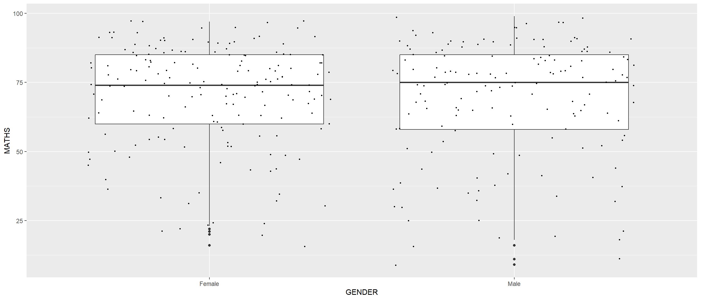
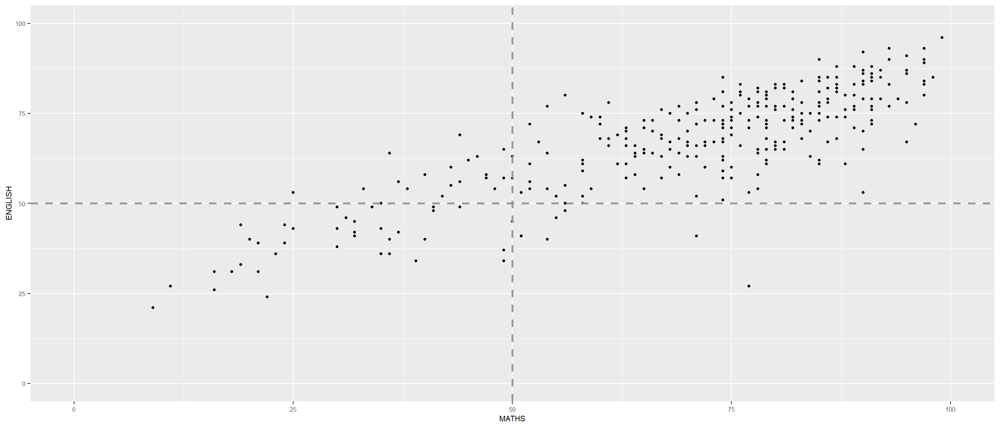

pacman::p_load(tidyverse)Hands-on 1 - DataVis with ggplot2
1. OVERVIEW
This study explores data visualisation using Tidyverse package.
2. R PACKAGE REQUIRED
2.1 Load R Packages
3. DATA PREPARATION
3.1 Acquire Data Source
This study will be based on fictitious data set provided with this lesson.
3.2 Import Data
3.2.1 Import Data
3.2.2 Inspect Missing Value
4. DATA VISUALISATION
4.1 Compare Charts between R Graphics and ggplot2
Compare histogram by R Graphics and ggplot2 -
4.1.1 Plot with R Graphics
Show the code
hist(exam_data$MATHS)4.1.2 Plot with ggplot2
Show the code
ggplot(data = exam_data,
aes(x = MATHS)) +
geom_histogram(bins = 10,
boundary = 100,
color = "black",
fill = "grey") +
ggtitle("Distribution of Maths scores")
Remarks :
ggplot2 allows to customise axis labels, title, grid lines.
4.2 Explore Functions in ggplot2
4.2.1 Create Base for a ggplot Object
text
-- initialise a ggplot Object
ggplot(data = exam_data)
-- introduce aesthetic mappings
ggplot(data = exam_data,
aes(x = MATHS))
4.2.2 Add Geometric Objects
text
4.2.2.1 plot bar chart
ggplot(data = exam_data,
aes(x = RACE)) +
geom_bar()4.2.2.2 plot dot chart
The width of a dot corresponds to the bin width (or maximum width, depending on the binning algorithm).
dots are stacked.
each dot representing one observation.
ggplot(data = exam_data,
aes(x = MATHS)) +
geom_dotplot(dotsize = 0.5)Bin width defaults to 1/30 of the range of the data. Pick better value with
`binwidth`.
Remarks :
The y-scale can be misleading. Hence, below dot chart, the y-axis will be turned off with scale-y-continuous( ) function.
Show the code
ggplot(data = exam_data,
aes(x = MATHS)) +
geom_dotplot(binwidth = 2.5,
dotsize = 0.5) +
scale_y_continuous(NULL,
breaks = NULL) 
4.2.2.3 plot histogram
Note that the default bin is 30.
Show the code
ggplot(data = exam_data,
aes(x = MATHS)) +
geom_histogram() `stat_bin()` using `bins = 30`. Pick better value with `binwidth`.
-- modify colour and bin
Show the code
ggplot(data = exam_data,
aes(x = MATHS)) +
geom_histogram(bins = 20,
color = "black",
fill = "light blue") 
-- add subgroup to each bar
Show the code
ggplot(data = exam_data,
aes(x = MATHS,
fill = GENDER)) +
geom_histogram(bins = 20,
color = "grey30")4.2.2.4 plot density chart
Show the code
ggplot(data = exam_data,
aes(x = MATHS)) +
geom_density() 
-- plot two (2) kernel density lines with colour arguments under aes( )
Show the code
ggplot(data = exam_data,
aes(x = MATHS,
colour = GENDER)) +
geom_density()-- plot two (2) kernel density with fill arguments under aes( )
Show the code
ggplot(data = exam_data,
aes(x = MATHS,
fill = GENDER)) +
geom_density()4.2.2.5 plot box plot
Show the code
ggplot(data = exam_data,
aes(y = MATHS,
x = GENDER)) +
geom_boxplot() -- add notches to box plot
Show the code
ggplot(data = exam_data,
aes(y = MATHS,
x = GENDER)) +
geom_boxplot(notch = TRUE)
4.2.2.6 mix plot
Show the code
ggplot(data = exam_data,
aes(y = MATHS,
x = GENDER)) +
geom_boxplot() +
geom_point(position = "jitter",
size = 0.5)
4.2.2.7 plot violin chart
Show the code
ggplot(data = exam_data,
aes(y = MATHS,
x = GENDER)) +
geom_violin()
-- combine violin chart with box plot
Show the code
ggplot(data = exam_data,
aes(y = MATHS,
x = GENDER)) +
geom_violin(fill = "light blue") +
geom_boxplot(alpha = 0.5) 
4.2.2.8 plot point / scatterplot chart
Show the code
ggplot(data = exam_data,
aes(x = MATHS,
y = ENGLISH)) +
geom_point() 4.2.3 Add Statistical Functions
There are two ways to use these functions :
- add a stat_() function and override the default geom
- add a geom_() function and override the default stat.
4.2.3.1 add mean values on the boxplot
Show the code
ggplot(data = exam_data,
aes(y = MATHS,
x = GENDER)) +
geom_boxplot() +
stat_summary(geom = "point",
fun.y = "mean",
colour = "red",
size = 4) Warning: The `fun.y` argument of `stat_summary()` is deprecated as of ggplot2 3.3.0.
ℹ Please use the `fun` argument instead.
Show the code
ggplot(data = exam_data,
aes(y = MATHS, x = GENDER)) +
geom_boxplot() +
geom_point(stat = "summary",
fun.y = "mean",
colour = "red",
size = 4) Warning in geom_point(stat = "summary", fun.y = "mean", colour = "red", :
Ignoring unknown parameters: `fun.y`No summary function supplied, defaulting to `mean_se()`4.2.4 Add Best Fit Curve on Scatterplot
Show the code
ggplot(data = exam_data,
aes(x = MATHS,
y = ENGLISH)) +
geom_point() +
geom_smooth(size = 0.5)Warning: Using `size` aesthetic for lines was deprecated in ggplot2 3.4.0.
ℹ Please use `linewidth` instead.`geom_smooth()` using method = 'loess' and formula = 'y ~ x'
-- override default smoothing method
Show the code
ggplot(data = exam_data,
aes(x = MATHS,
y = ENGLISH)) +
geom_point() +
geom_smooth(method = lm,
size = 0.5)`geom_smooth()` using formula = 'y ~ x'
4.2.5 Plot Trellis Plot
Facets Facetting generates small multiples (sometimes also called trellis plot), each displaying a different subset of the data.
Facets are an alternative to aesthetics for displaying additional discrete variables.
ggplot2 supports two (2) types of factes : facet_wrap( ) facet_grid( )
4.2.5.1 plot with face_wrap( ) function
Show the code
ggplot(data = exam_data,
aes(x = MATHS)) +
geom_histogram(bins = 20) +
facet_wrap(~ CLASS)4.2.5.2 plot with face_grid( ) function
Show the code
ggplot(data = exam_data,
aes(x = MATHS)) +
geom_histogram(bins = 20) +
facet_grid(~ CLASS)
4.3 Coordinates
- The Coordinates functions map the position of objects onto the plane of the plot.
There are a number of different possible coordinate systems to use, they are:
coord_cartesian(): the default cartesian coordinate systems, where you specify x and y values (e.g. allows you to zoom in or out).coord_flip(): a cartesian system with the x and y flipped.coord_fixed(): a cartesian system with a “fixed” aspect ratio (e.g. 1.78 for a “widescreen” plot).coord_quickmap(): a coordinate system that approximates a good aspect ratio for maps.
4.3.1. Working with Coordinate
4.3.2 Change range for y- and x-axis
5. NON-DATA CONTROL ELEMENT
background colour
size of fonts
grid lines
colour of labels
Built-in themes include :
theme_gray()(default)theme_bw()theme_classic()
5.1 Set Theme
5.1.1 Plot Horizontal Bar Chart with theme_gray( )
Show the code
ggplot(data = exam_data,
aes(x = RACE)) +
geom_bar() +
coord_flip() +
theme_gray()
5.1.2 Plot Horizontal Bar Chart with theme_classic( )
Show the code
ggplot(data = exam_data,
aes(x = RACE)) +
geom_bar() +
coord_flip() +
theme_classic()
5.1.3 Plot Horizontal Bar Chart with theme_minimal( )
Show the code
ggplot(data = exam_data,
aes(x = RACE)) +
geom_bar() +
coord_flip() +
theme_minimal()
6. DATAVIZ ENHANCEMENT
6.1 Chart for Frequency Analysis
A simple vertical bar chart for frequency analysis.
6.1.1 Evaluate Original Bar Chart
Show the code
ggplot(data = exam_data,
aes(x = RACE)) +
geom_bar()Lecturer’s input :
Y-axis label is not clear (i.e. count).
To support effective comparison, the bars should be sorted by their respective frequencies.
This is a static graph. So, the frequency value is needed to provide more context.
6.1.2 Enhance Bar Chart
6.1.2.1 derive descriptive statistic
First understand the variable.
Show the code
questionr::freq(exam_data$RACE) n % val%
Chinese 193 59.9 59.9
Indian 12 3.7 3.7
Malay 108 33.5 33.5
Others 9 2.8 2.86.1.2.2 plot bar chart
-- attempt 1
exam_data %>%
group_by(RACE) %>%
summarise(count = n()) %>%
rename(race = RACE) %>%
mutate(pct = scales::percent(count/sum(count)),
res = str_c(count, ", ", pct)) %>%
ggplot(aes(x = reorder(race, -count),
y = count)) +
geom_bar(stat = "identity") +
labs(x = "Race",
y = "No. of\nPupils",
title = "Primary 3 Students By Race",
subtitle = "Students from a local school") +
theme(axis.title.y = element_text(angle = 0,
size = 10),
axis.title.x = element_text(size = 10),
axis.text.x = element_text(size = 10),
axis.text.y = element_text(size = 10)) +
geom_text(aes(label = res),
vjust = -0.9) +
scale_y_continuous(limits = c(0,210))
-- attempt 2 with recommended function - fct_infreq( )
exam_data %>%
group_by(RACE) %>%
summarise(count = n()) %>%
rename(race = RACE) %>%
mutate(pct = scales::percent(count/sum(count)),
res = str_c(count, ", ", pct)) %>%
ggplot(aes(fct_infreq(race),
y = count)) +
geom_bar(stat = "identity") +
labs(x = "Race",
y = "No. of\nPupils",
title = "Primary 3 Students By Race",
subtitle = "Students from a local school") +
theme(axis.title.y = element_text(angle = 0,
size = 10),
axis.title.x = element_text(size = 10),
axis.text.x = element_text(size = 10),
axis.text.y = element_text(size = 10)) +
geom_text(aes(label = res),
vjust = -0.9) +
scale_y_continuous(limits = c(0,210))Credit: Iearned this lesson which sourced from Getting things into the right order of Prof. Claus O. Wilke, the author of Fundamentals of Data Visualization
-- attempt 3 with fct_reorder( )
exam_data %>%
group_by(RACE) %>%
summarise(count = n()) %>%
rename(race = RACE) %>%
mutate(pct = scales::percent(count/sum(count)),
res = str_c(count, ", ", pct)) %>%
ggplot(aes(fct_reorder(race, -count),
y = count)) +
geom_bar(stat = "identity") +
labs(x = "Race",
y = "No. of\nPupils",
title = "Primary 3 Students By Race",
subtitle = "Students from a local school") +
theme(axis.title.y = element_text(angle = 0,
size = 10),
axis.title.x = element_text(size = 10),
axis.text.x = element_text(size = 10),
axis.text.y = element_text(size = 10)) +
geom_text(aes(label = res),
vjust = -0.9) +
scale_y_continuous(limits = c(0,210))Remarks :
Below is the sample answer provided for this lesson.
Plot above added title and subtitle to set the main context for this plot.

Below are two (2) code chunk with different approach provided by the lesson :
ggplot(data=exam_data,
aes(x=reorder(RACE,RACE,
function(x)-length(x))))+
geom_bar() +
ylim(0,220) +
geom_text(stat="count",
aes(label=paste0(..count.., ", ",
round(..count../sum(..count..)*100,
1), "%")),
vjust=-1) +
xlab("Race") +
ylab("No. of\nPupils") +
theme(axis.title.y=element_text(angle = 0))exam_data %>%
mutate(RACE = fct_infreq(RACE)) %>%
ggplot(aes(x = RACE)) +
geom_bar()+
ylim(0,220) +
geom_text(stat="count",
aes(label=paste0(..count.., ", ",
round(..count../sum(..count..)*100,
1), "%")),
vjust=-1) +
xlab("Race") +
ylab("No. of\nPupils") +
theme(axis.title.y=element_text(angle = 0))6.2 Histogram
text
6.2.1 Evaluate Original Histogram

Lecturer’s input :
Adding mean and median lines on the histogram plot.
Change fill color and line color
6.2.2 Enhance Histogram
ggplot(data = exam_data,
aes(x = MATHS)) +
geom_histogram(bins = 20,
color = "black",
fill = "light blue") +
geom_vline(xintercept = mean(exam_data$MATHS),
col = "red",
lwd = 1,
linetype = "dashed") +
geom_vline(xintercept = median(exam_data$MATHS),
col = "black",
lwd = 1,
linetype = "dashed") +
annotate("text",
x = mean(exam_data$MATHS)*0.84,
y = mean(exam_data$MATHS)*0.78,
label = paste("Mean =", round(mean(exam_data$MATHS),2)),
col = "red",
size = 5) +
annotate("text",
x = median(exam_data$MATHS)*0.8,
y = median(exam_data$MATHS)*0.8,
label = paste("Median =", round(median(exam_data$MATHS),2)),
col = "black",
size = 5)
Remarks :
Below is the sample answer provided for this lesson.

Below is the code chunk provided by the lesson :
ggplot(data=exam_data,
aes(x= MATHS)) +
geom_histogram(bins=20,
color="black",
fill="light blue") +
geom_vline(aes(xintercept=mean(MATHS,
na.rm=T)),
color="red",
linetype="dashed",
size=1) +
geom_vline(aes(xintercept=median(MATHS,
na.rm=T)),
color="grey30",
linetype="dashed",
size=1)6.3 Trellis Plot for Histogram
text
6.3.1 Evaluate Original Trellis Plot for Histogram

Lecturer’s input :
The histograms above are elegantly designed but not informative. This is because they only reveal the distribution of English scores by gender but without context such as all pupils.
Create a makeover looks similar to the figure below. The background histograms show the distribution of English scores for all pupils.
6.3.2 Enhance Trellis Plot for Histogram
gendEngl <- exam_data[,-3]
ggplot(exam_data,
aes(x = ENGLISH, fill = GENDER)) +
geom_histogram(data = gendEngl, fill = "grey", alpha = .5) +
geom_histogram(color = "black") +
facet_wrap(~ GENDER) +
theme(axis.title.y = element_text(size = 5),
axis.title.x = element_text(size = 5),
axis.text.x = element_text(size = 5),
axis.text.y = element_text(size = 5),
panel.grid.major = element_line(colour = "steelblue",
size = rel(0.5)),
panel.grid.minor = element_blank()) +
scale_y_continuous(limits = c(0,30)) +
guides(fill = FALSE) +
theme_bw()Warning: The `size` argument of `element_line()` is deprecated as of ggplot2 3.4.0.
ℹ Please use the `linewidth` argument instead.Warning: The `<scale>` argument of `guides()` cannot be `FALSE`. Use "none" instead as
of ggplot2 3.3.4.`stat_bin()` using `bins = 30`. Pick better value with `binwidth`.
`stat_bin()` using `bins = 30`. Pick better value with `binwidth`.
Remarks :
- Below is the sample answer provided for this lesson.

Below is the code chunk provided by the lesson :
d <- exam_data
d_bg <- d[, -3]
ggplot(d, aes(x = ENGLISH, fill = GENDER)) +
geom_histogram(data = d_bg, fill = "grey", alpha = .5) +
geom_histogram(colour = "black") +
facet_wrap(~ GENDER) +
guides(fill = FALSE) +
theme_bw()6.4 Scatterplot
text
6.4.1 Evaluate Original Scatterplot

A within group scatterplot with reference lines.
ggplot(data = exam_data,
aes(x = MATHS,
y = ENGLISH)) +
geom_point(size = 1) +
coord_cartesian(xlim = c(0,100),
ylim = c(0,100)) +
theme(axis.title.y = element_text(size = 8),
axis.title.x = element_text(size = 8),
axis.text.x = element_text(size = 6),
axis.text.y = element_text(size = 6)) +
geom_hline(yintercept = 50,
linetype = "dashed",
colour = "grey60",
size = 1) +
geom_vline(xintercept = 50,
linetype = "dashed",
colour = "grey60",
size = 1)Below is the code chunk provided by the lesson :
ggplot(data=exam_data,
aes(x=MATHS, y=ENGLISH)) +
geom_point() +
coord_cartesian(xlim=c(0,100),
ylim=c(0,100)) +
geom_hline(yintercept=50,
linetype="dashed",
color="grey60",
size=1) +
geom_vline(xintercept=50,
linetype="dashed",
color="grey60",
size=1)6.5 Trellis Boxplot
This section consits of three different trellis plots. ### 6.5.1 Plot 2 Columns - 2 Characters and 1 Continuous Variable

ggplot(data = exam_data,
aes(y = MATHS,
x = CLASS)) +
geom_boxplot() +
facet_grid(~ GENDER) +
theme(axis.title.y = element_text(size = 7.5),
axis.title.x = element_text(size = 7.5),
axis.text.x = element_text(size = 7),
axis.text.y = element_text(size = 7))
Below is the code chunk provided by the lesson :
ggplot(data=exam_data,
aes(y = MATHS, x= CLASS)) +
geom_boxplot() +
facet_grid(~ GENDER)6.5.2 Plot 1 Column, 2 Rows - 2 Characters and 1 Continuous Variables

ggplot(data = exam_data,
aes(y = MATHS,
x = CLASS)) +
geom_boxplot() +
facet_grid(GENDER ~ CLASS, scales = "free") +
theme(axis.title.y = element_text(size = 7.5),
axis.title.x = element_text(size = 7.5),
axis.text.x = element_text(size = 7),
axis.text.y = element_text(size = 7),
strip.text.x = element_blank(),
strip.text.y = element_text(size = 7),
panel.spacing.y = unit(1, "mm"),
panel.spacing.x = unit(0, "mm")
)
Below is the code chunk provided by the lesson :
ggplot(data=exam_data,
aes(y = MATHS, x= CLASS)) +
geom_boxplot() +
facet_grid(GENDER ~.)6.5.3 Plot 1 Column, 2 Rows - 2 Characters and 1 Continuous Variables

ggplot(data = exam_data,
aes(y = MATHS,
x = GENDER)) +
geom_boxplot() +
facet_grid(GENDER ~ CLASS, scales = "free") +
theme(axis.title.y = element_text(size = 7.5),
axis.title.x = element_text(size = 7.5),
axis.text.x = element_text(size = 6.5),
axis.text.y = element_text(size = 6.5),
strip.text.y = element_text(size = 7),
strip.text.x = element_text(size = 7),
panel.spacing.y = unit(1, "mm"),
panel.spacing.x = unit(1, "mm")
)Below is the code chunk provided by the lesson :
ggplot(data=exam_data,
aes(y = MATHS, x= GENDER)) +
geom_boxplot() +
facet_grid(GENDER ~ CLASS)6.6 Change Theme

Instruction :
Change the colour of plot panel background of theme_minimal() to light blue and the colour of grid lines to white.
ggplot(data = exam_data,
aes(x = RACE)) +
geom_bar() +
coord_flip() +
theme_minimal() +
theme(
panel.background = element_rect(fill = "lightblue",
colour = "lightblue"),
panel.grid.major = element_line(size = 0.5,
linetype = "solid",
colour = "white"),
axis.title.y = element_text(size = 7.5),
axis.title.x = element_text(size = 7.5),
axis.text.x = element_text(size = 6.5),
axis.text.y = element_text(size = 6.5)
)
Below is the code chunk provided by the lesson :
ggplot(data=exam_data,
aes(x=RACE)) +
geom_bar() +
coord_flip() +
theme_minimal() +
theme(panel.background = element_rect(
fill = "lightblue",
colour = "lightblue",
size = 0.5,
linetype = "solid"),
panel.grid.major = element_line(
size = 0.5,
linetype = 'solid',
colour = "white"),
panel.grid.minor = element_line(
size = 0.25,
linetype = 'solid',
colour = "white"))7. REFERENCES
Hadley Wickham (2023) ggplot2: Elegant Graphics for Data Analysis. Online 3rd edition.
Winston Chang (2013) R Graphics Cookbook 2nd edition. Online version.
Healy, Kieran (2019) Data Visualization: A practical introduction. Online version